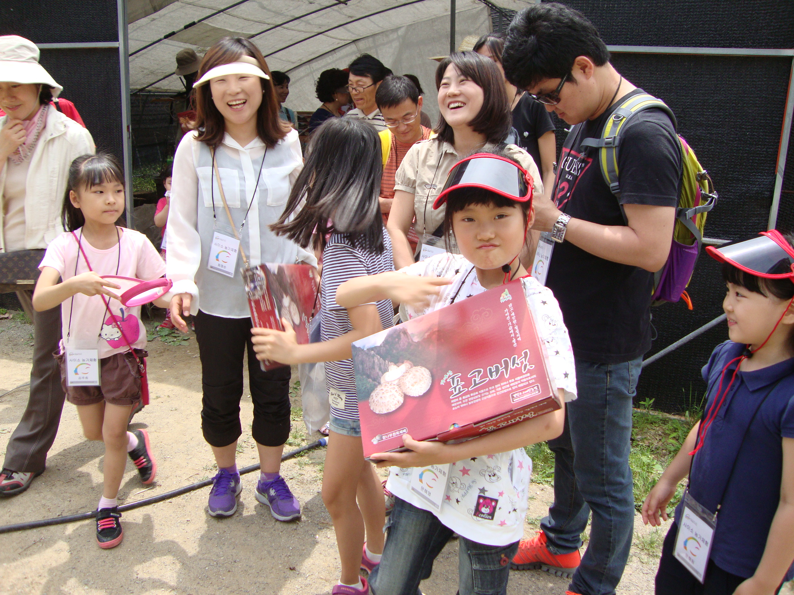
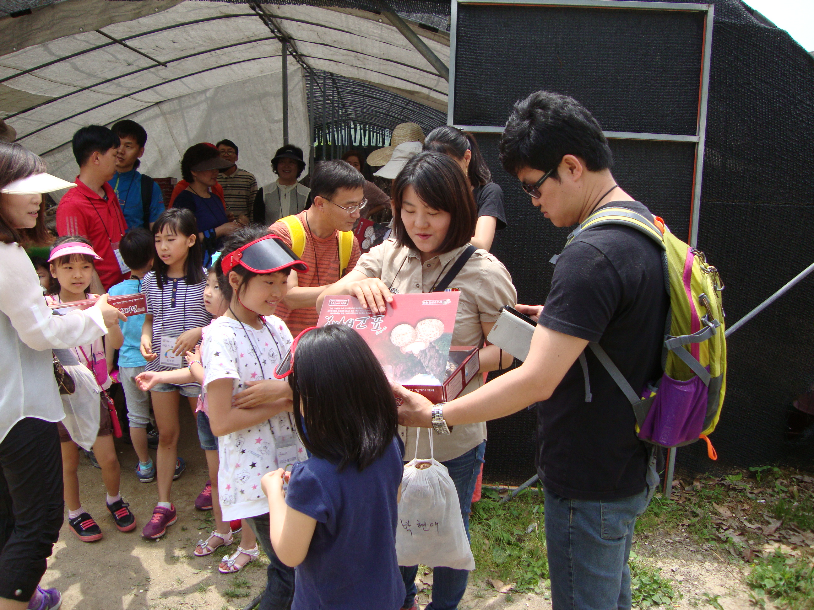

해든가든
제품 소개
체험 소개
커뮤니티
해든가든
해든가든 이야기
연혁
프로젝트
제품 소개
건표고버섯
표고버섯 스낵
기타
체험 소개
재배 체험
요리 체험
네이버스마트플레이스
커뮤니티
공지사항
갤러리
문의사항
닫기
자연이 준 건강한 선물
참나무 표고버섯
체험 농장
체험 문의
체험 관련 안내사항을 알려드립니다.
바로가기
체험 프로그램
체험 프로그램을 알려드립니다.
바로가기
해든가든 이야기
해든가든 이야기를 들려드립니다.
바로가기
체험&프로그램
버섯의 매력을 생생하게 경험하세요
이전
다음
정지

표고버섯 수확 체험
참나무 원목에서 자라는 표고버섯을 직접 보고, 손으로 따는 순간은 아이들에게 자연의 신비로움을 느끼게 해줍니다. 흙내음 가득한 농장에서 버섯이 자라는 과정을 체험하며 자연과 생명의 소중함을 배울 수 있죠.
2025-08-07

흙내음이 가득한 자연 속으로
참나무 원목에서 자라는 표고버섯을 직접 보고, 손으로 따는 순간은 아이들에게 자연의 신비로움을 느끼게 해줍니다. 흙내음 가득한 농장에서 버섯이 자라는 과정을 체험하며 자연과 생명의 소중함을 배울 수 있죠.
2025-07-22
문양 로컬 푸드
참나무 원목에서 자라는 표고버섯을 직접 보고, 손으로 따는 순간은 아이들에게 자연의 신비로움을 느끼게 해줍니다. 흙내음 가득한 농장에서 버섯이 자라는 과정을 체험하며 자연과 생명의 소중함을 배울 수 있죠.
2024-07-22
표고버섯 수확 체험
참나무 원목에서 자라는 표고버섯을 직접 보고, 손으로 따는 순간은 아이들에게 자연의 신비로움을 느끼게 해줍니다. 흙내음 가득한 농장에서 버섯이 자라는 과정을 체험하며 자연과 생명의 소중함을 배울 수 있죠.
2025-08-07